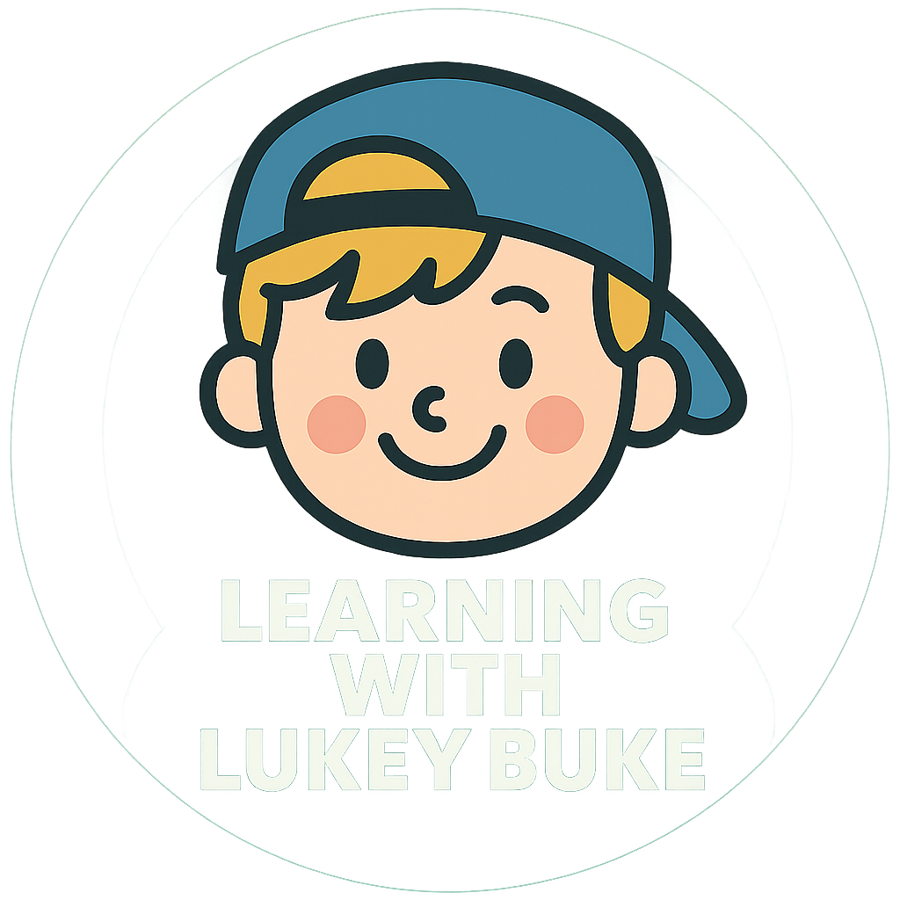

From backyard play to a brave moment in the woods, this story shows how loyalty and love can shape a childhood and last a lifetime.From viral Instagram moments to fresh, original captions, this blog delivers daily doses of humor, sarcasm, and emotional truth. Perfect for scrolling when you need a break, a laugh, or a reminder that you’re not alone in the chaos.
View Issue 1 View Issue 2Follow Lukey Buke as he reflects on the blue teddy bear that changed his nights forever.
View PostTop 3 Online Math Games for Kids
View PostFrom backyard play to a brave moment in the woods, this story shows how loyalty and love can shape a childhood and last a lifetime.
View PostSome dreams don’t fade, they wait. A story of courage, imagination, and the magic of dreams.
View PostBefore the legend, Buck Remington was just a kid with a busted boot and a stubborn soul. This origin story follows his early days on the frontier where grit, fire, and quiet courage shaped the outlaw the stars would never forget.
View PostWhen a mysterious crew of space scavengers lands in the canyon, Buck Remington is offered a map and a mission that could change everything. What they’re chasing might still be alive and Buck might be the only one who can find it.
View PostShe’s not just a witch. She’s a storm in the mist. Kaelis returns to the village with emotion feelers, an eerie gift that lets her sense and shape energy through ritual and telepathic suggestion. But her first adventure tests more than her magic. It challenges her heart.
View Post